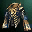
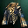

Masterwork
El Masterwork/Foundation es un bonus adicional que puede salir al craftear un Ãtem, 4% en las armaduras y 1% en las armas. El desellado de los mismos se hace con Mammon's Varnish Enhancer (comprandolos en el Merchant of Mammon) y se desella en el Blacksmith of mammon. Todas las partes de armaduras (excepto el pecho) dan un bonus adicional similar al bonus que da el set.
 
